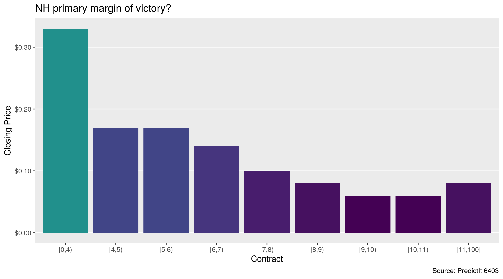
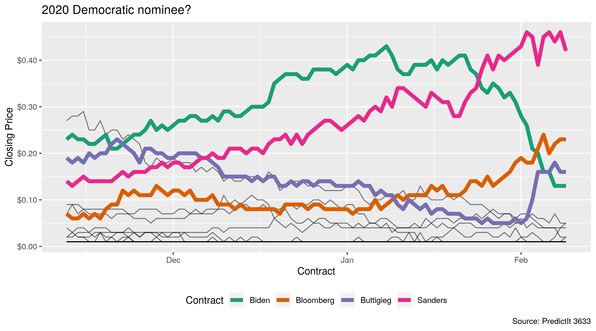

The goal of predictr is to access the PredictIt API and determine the price of binary futures contracts trading on the prediction market. Data is returned as tidy tibbles, with unique rows for contract prices at a given point in time.
Markets
Prediction markets demonstrate the efficient market hypothesis, which states that market prices reflect all available information. Self-interested traders buy and sell contracts tied to a binary outcome. These contracts expire for $1 or $0, depending on the outcome.
The more likely an outcome is, the higher the price and the lower the payout. As the probability of an outcome changes, traders buy or sell at new prices and the equilibrium price updates to reflect the new probability.
Installation
You can install the development version from GitHub with:
Usage
library(predictr)
market_price(6403)
#> # A tibble: 9 x 7
#> time mid market cid contract last close
#> <dttm> <int> <chr> <int> <ord> <dbl> <dbl>
#> 1 2020-02-10 16:34:54 6403 NH primary margin of vic… 20984 [0,4) 0.3 0.33
#> 2 2020-02-10 16:34:54 6403 NH primary margin of vic… 20988 [4,5) 0.13 0.17
#> 3 2020-02-10 16:34:54 6403 NH primary margin of vic… 20990 [5,6) 0.12 0.17
#> 4 2020-02-10 16:34:54 6403 NH primary margin of vic… 20991 [6,7) 0.1 0.14
#> 5 2020-02-10 16:34:54 6403 NH primary margin of vic… 20985 [7,8) 0.11 0.1
#> 6 2020-02-10 16:34:54 6403 NH primary margin of vic… 20986 [8,9) 0.07 0.08
#> 7 2020-02-10 16:34:54 6403 NH primary margin of vic… 20987 [9,10) 0.07 0.06
#> 8 2020-02-10 16:34:54 6403 NH primary margin of vic… 20992 [10,11) 0.06 0.06
#> 9 2020-02-10 16:34:54 6403 NH primary margin of vic… 20989 [11,100] 0.12 0.08Current and historical prices can be automatically plotted with ggplot2.

